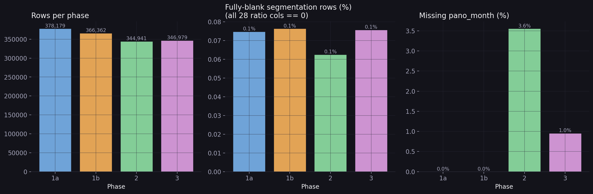
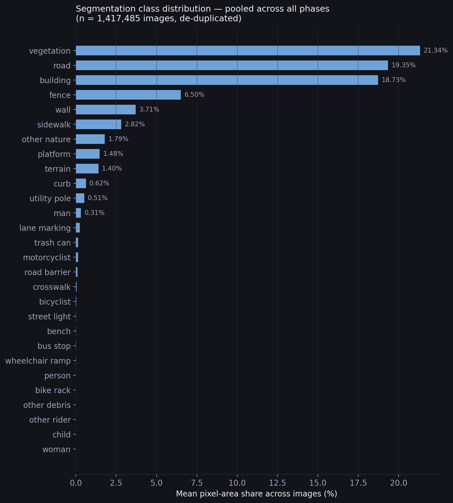
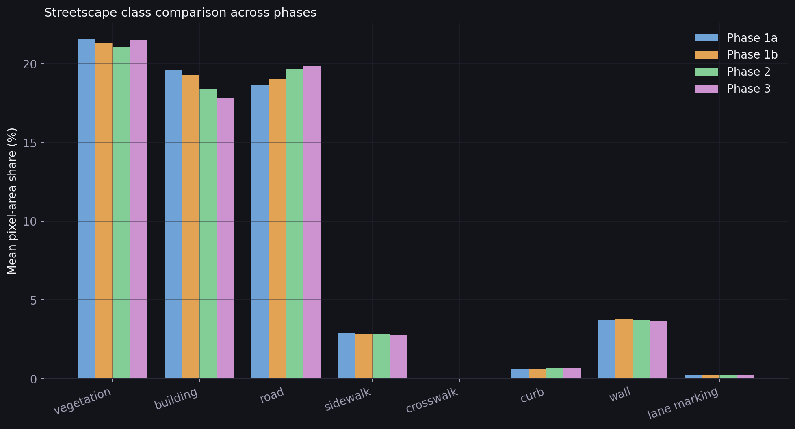
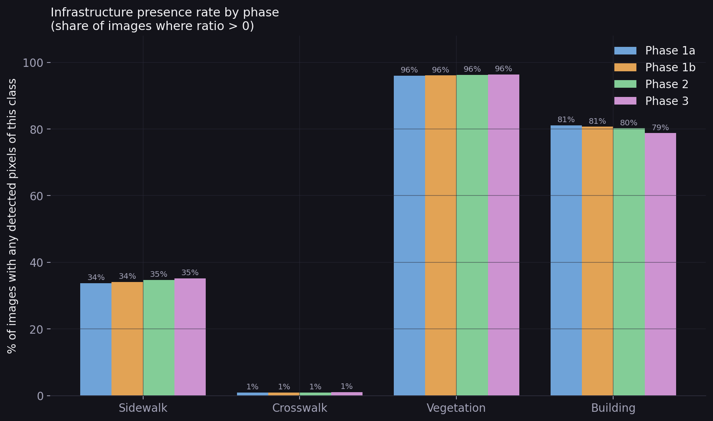
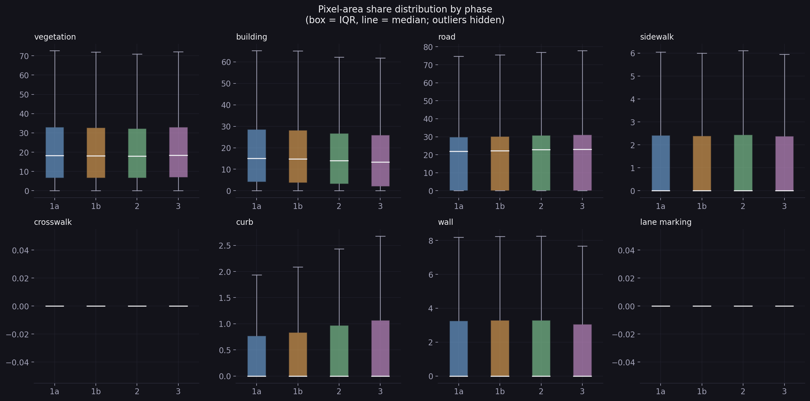
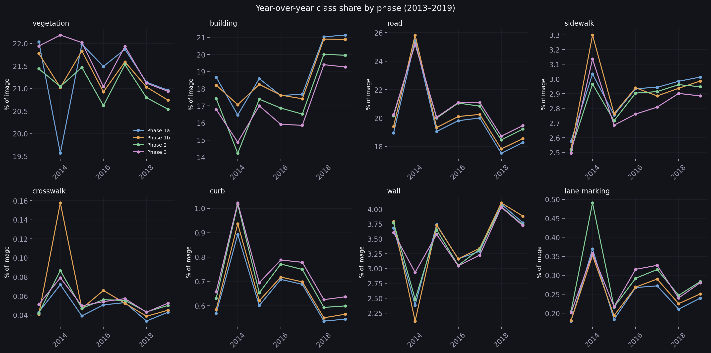
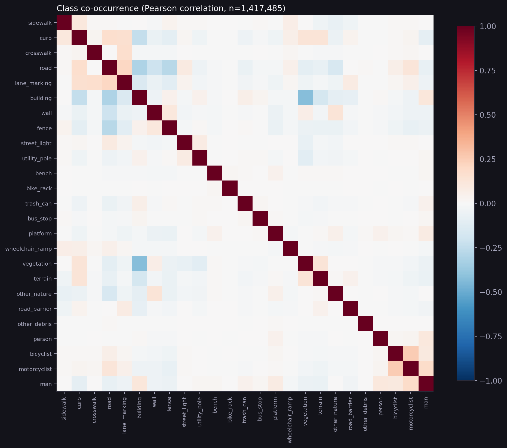

Streetscape
Segmentation
Pixel-level streetscape composition across 1,436,461 images and four data collection phases — what Jakarta's streets are made of, how consistent that picture is across phases and years, and which classes tend to appear together.
Data quality: the Phase 3 anomaly, resolved
An earlier run of Phase 3 showed near-zero vegetation and building coverage alongside an anomalously high crosswalk ratio, with 22.8% of rows fully blank across all 28 classes. The cause: Phase 3 had been segmented with the wrong model checkpoint in that original run, not the verified Mapillary-trained weights used for the other three phases. Re-running Phase 3 against the correct checkpoint brought every metric back in line — the panel below is that corrected state, verified row by row.
A second, unrelated issue briefly inflated Phase 3's missing-pano_month count: roughly 6,700 Phase 3 pano_ids carried a trailing date suffix that failed to match the panoid universe file during the join. Stripping the suffix recovered nearly all of them, bringing Phase 3's missing-month rate down to under 1%.

What Jakarta's streets are made of
Pooled across all phases and de-duplicated to 1,417,485 unique images, vegetation, road, and building surfaces dominate the frame — together accounting for roughly three-fifths of average pixel coverage. Pedestrian infrastructure specifically (sidewalk, curb, crosswalk) is a comparatively small share, consistent with a street network built primarily around vehicle and motorbike traffic rather than pedestrians.


Consistency across phases
Two different questions get asked of this data: does a class appear in an image at all (presence rate), and how much of the frame does it fill when it does (conditional size, shown above). The two can diverge — a class can be present almost everywhere while still covering a small share of any single frame — so both are reported rather than collapsed into one number.


Trends over time
Pooling by year rather than by phase shows how coverage has shifted since 2013. Vegetation and building both show a visible step up from 2018 onward across every phase's line — consistent with Jakarta's built-up density increasing over the capture window, and with all four phases responding to the same underlying city rather than to phase-specific processing artifacts.

How classes relate to each other
Correlating class ratios across images surfaces one relationship well above the noise floor: building and vegetation are strongly negatively correlated (r ≈ −0.6 to −0.7) — denser, more built-up frames systematically show less greenery. Almost everything else sits close to zero, meaning most streetscape classes vary largely independently of one another across the dataset.
